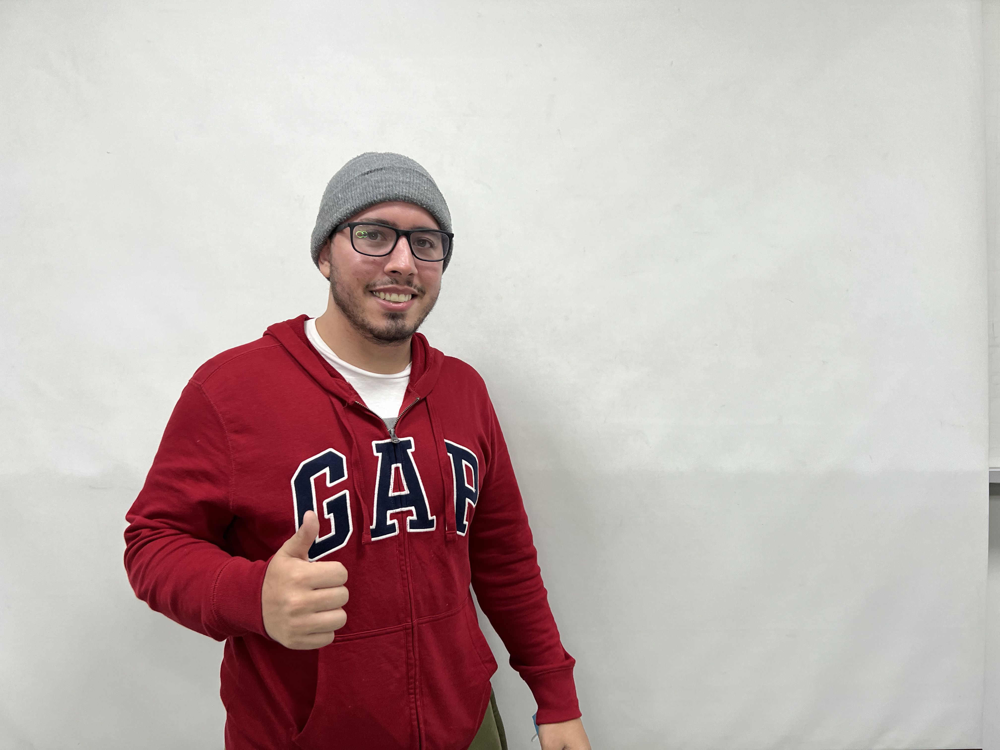
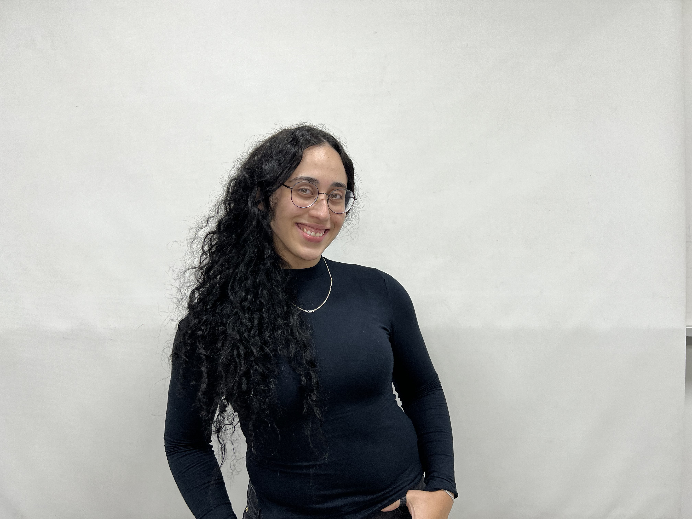
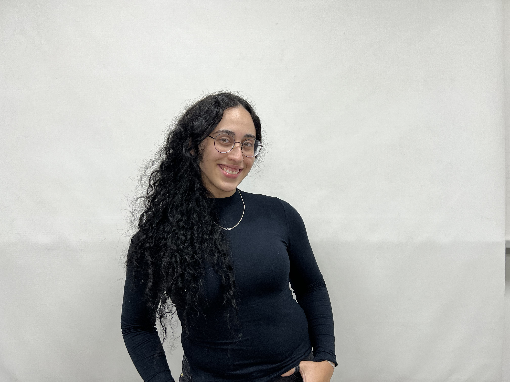
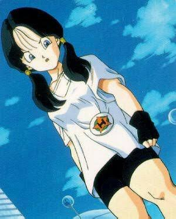
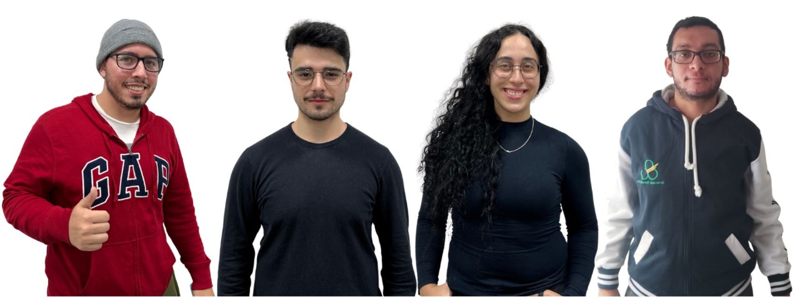
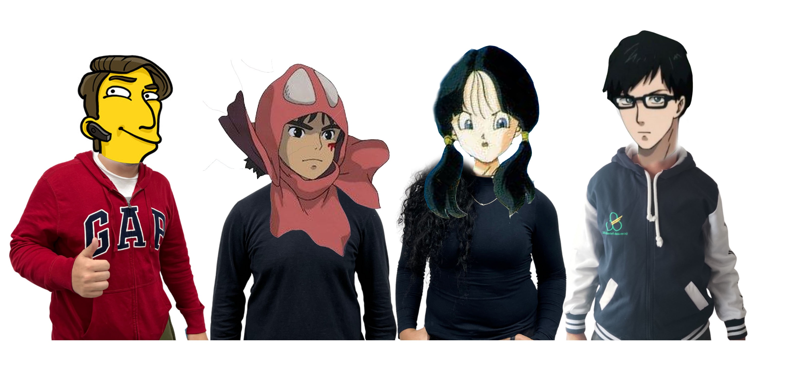

Atividade 1
Atividade 1
Imagens Originais:
Nessa parte do relatório, exibimos as fotos dos integrantes tiradas com o celular no laboratório.
As fotos mostram os integrantes Caleb, Gabriel, Vitor e Beatriz, respectivamente.

 

Avatar:
Aqui mostramos os avatares escolhidos por cada integrante.
Novamente, a ordem dos avatares mostram os integrantes Caleb, Gabriel, Vitor e Beatriz, respectivamente.

Imagens em P&B (ao passar o mouse):
Nessa seção, fizemos o primeiro tratamento de imagens do relatório e exibimos as fotos dos integrantes em preto e branco.
Para tal, a escolha do grupo foi realizar o tratamento direto na página html, utilizando CSS para realizar a transição da imagem em cores para a imagem em p&b.
Passe o mouse por cima e veja a transição.
Imagens em Menor Definição:
Nessa seção, fizemos o segundo tratamento de imagens do relatório e exibimos as fotos dos integrantes em menor resolução.
Para tal, a escolha do grupo foi realizar o tratamento manualmente.

Imagens da Câmera:
Nessa parte do relatório, apresentamos as fotos tiradas de cada integrante com a câmera profissional.
Nota-se uma diferença considerável de resolução e de cores em comparação com as fotos tiradas pelo celular.
Provavelmente a câmera apresentou uma resolução menor que o celular por ela estar configurada no modo de vídeo. Tiramos fotos no ambiente controlado e iluminado, porém a configuração no modo de vídeo provavelmente privilegia frames em detrimento da resolução.
O integrante Caleb faltou no laboratório nesse dia. Por conta disso, mantivemos a mesma imagem do celular.


Imagens da câmera em P&B (ao passar o mouse):
Nessa seção, fizemos tratamento de imagens em preto e branco para as fotos tiradas pela câmera.
Novamente, o grupo escolheu realizar o tratamento direto na página html, utilizando CSS para realizar a transição da imagem em cores para a imagem em p&b.
Nota-se uma diferença considerável na luminosidade em relação às fotos p&b do celular.
Foto do Grupo:
Aqui mostramos a foto do grupo e a montagem com os avatares nos rostos.


Vídeo de apresentação
Vídeo de apresentação do grupo
Vídeo com resolução reduzida
Nessa seção, reduzimos a resolução do vídeo em 25%. O método utilizado foi através de softwares que convertem para a resolução desejada.
Para essa resolução, não se nota uma perda grande de resolução.
Vídeo com resolução mais reduzida
Nessa seção, reduzimos a resolução do vídeo em 50%. Novamente, o método utilizado foi através de softwares que convertem para a resolução desejada.
Aqui já se nota uma perda drástica de resolução.